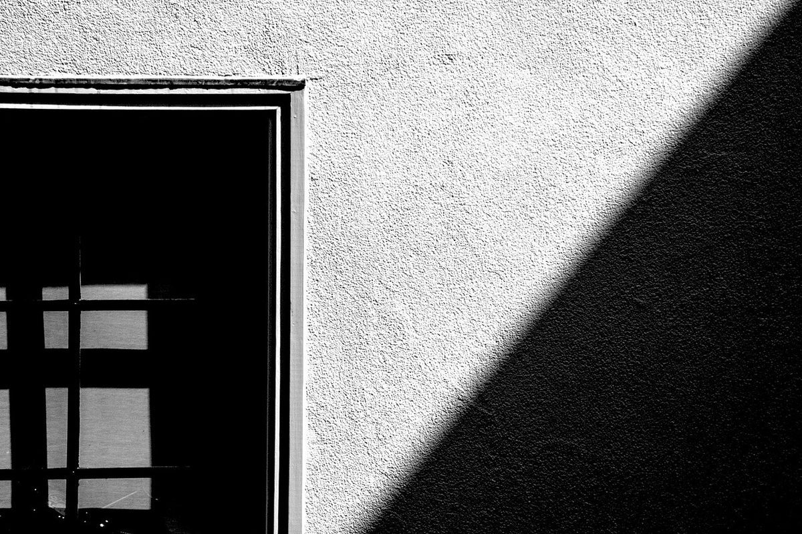

店のこと
店のこと
お店について確認できているのは、所在地・電話番号・Instagramのアカウントだけです。
このページの写真や言葉の組み立ては、制作側が連想して作ったものです。お店の実際の様子・考え・メニューとは関係がありません。
確認できていること
- 店名は「madei cafe」、業種はカフェ
- 所在地は茨城県古河市坂間212-3(〒306-0056)
- 電話番号は 0280-48-3053
- Instagramは @madei_cafe
- 営業時間・定休日・メニュー・価格・ご予約・駐車場は準備中
1 23456
23456
23456a の点配置(1)
いちばん少ない点でも、ひと文字。
「a」は1の点だけが盛り上がる、いちばん点の少ない文字のひとつです。店名「madei」の二文字目にも出てきます。上の写真はその1の位置に置いた、観葉植物の鉢のイメージです。



左から、白い布の光と影、白い壁の影、モンステラの葉(いずれもイメージ)。お店とは関係のないフリー素材です。